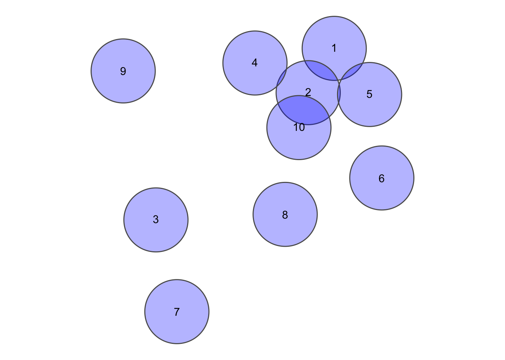
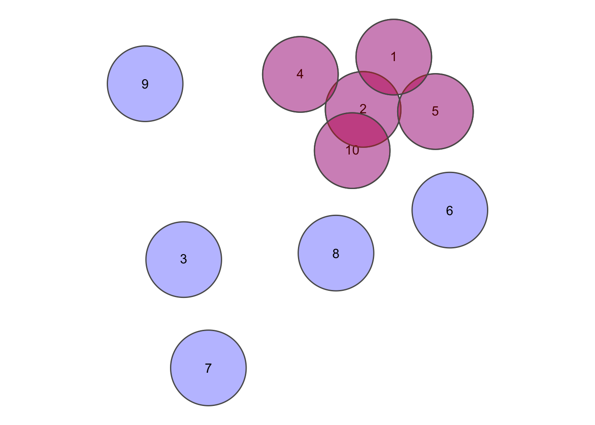
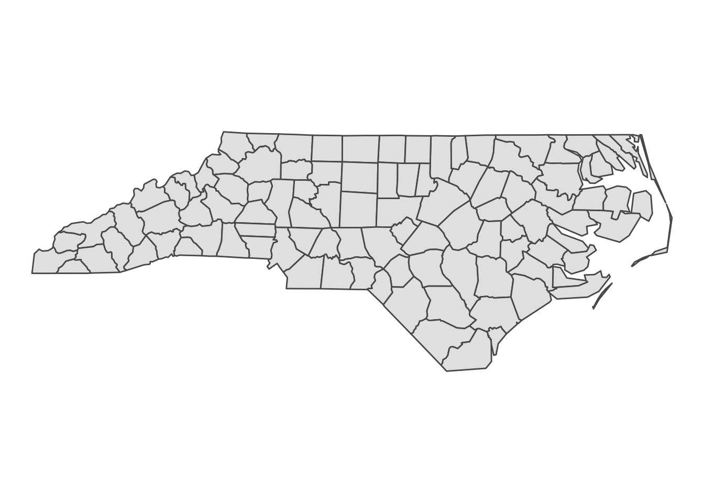

14 Polygon
14.1 Must not overlap

Figure 14.1: Source: Esri (2011)
In context of DE-9IM, this is a simple case. The polygon interiors should not overlap at all, everything else does not matter. Interior-Interior is the first of the 9 intersections, so the the intersection matrix as a code string would be: 2********. In the case of the example below:
set.seed(10)
nrows <- 10
circs <- data.frame(id = 1:nrows, x = rnorm(nrows), y = rnorm(nrows)) %>% st_as_sf(coords = c(2,
3)) %>% st_buffer(0.25)circsplot <- ggplot(circs) + geom_sf(fill = "blue", alpha = 0.3) + geom_sf_text(aes(label = id)) +
theme_void()
circsplot
This gives us a sparse matrix as an output, which is esentially a list with the same length as the x, where each position is a vector of integers with the indicies of the features in y (which may equal to x) where the pattern matches.
st_relate(circs, pattern = "2********")
## Sparse geometry binary predicate list of length 10, where the predicate was `relate_pattern'
## 1: 1, 2, 5
## 2: 1, 2, 4, 5, 10
## 3: 3
## 4: 2, 4
## 5: 1, 2, 5
## 6: 6
## 7: 7
## 8: 8
## 9: 9
## 10: 2, 10Setting sparse = FALSE returns a crossmatrix of all combinations.W
crossmatrix <- st_relate(circs, pattern = "2********", sparse = FALSE)
crossmatrix[1:6, 1:6] # only showing 6 since this prints nicely
## [,1] [,2] [,3] [,4] [,5] [,6]
## [1,] TRUE TRUE FALSE FALSE TRUE FALSE
## [2,] TRUE TRUE FALSE TRUE TRUE FALSE
## [3,] FALSE FALSE TRUE FALSE FALSE FALSE
## [4,] FALSE TRUE FALSE TRUE FALSE FALSE
## [5,] TRUE TRUE FALSE FALSE TRUE FALSE
## [6,] FALSE FALSE FALSE FALSE FALSE TRUE
# Remove the diagonals since it's simply each feature tested against itself
diag(crossmatrix) <- FALSE
error <- which(crossmatrix, arr.ind = TRUE) %>% as.vector() %>% unique()
circsplot + geom_sf(data = circs[error, ], fill = "red", alpha = 0.3)
14.2 Must not have gaps
Figure 14.2: Source: Esri (2011)
Lets cosider the North Carolina Dataset for this question.
nc = st_read(system.file("shape/nc.shp", package = "sf"), quiet = TRUE)
ggplot(nc) + geom_sf() + theme_void()
The first task is to dissolve all adjecent polygons together
nc_union <- st_union(nc)
nc_union
## Geometry set for 1 feature
## geometry type: MULTIPOLYGON
## dimension: XY
## bbox: xmin: -84.32385 ymin: 33.88199 xmax: -75.45698 ymax: 36.58965
## geographic CRS: NAD27If the output is a multipolygon as it is the case here, it’s bad news, there are gaps. To check which parts are disconnected from each other, we can cast the multipolygon to a polygon (in ArcGIS Terms “Multipart to singlepart”), add a rowname for each part and colour it by rowname.
nc_singlepart <- nc_union %>% st_cast("POLYGON") %>% st_sf() %>% mutate(id = 1:n())
ggplot(nc_singlepart) + geom_sf(aes(fill = factor(id))) + labs(fill = "id") + theme_void()
But maybe we can live with these Islands in the state of North Carolina, since this is in fact an accurate representation of reality (the gaps are a result of the Atlantic Ocean). We must now check whether the individual geometries have holes. Here we can make use of the way polygons are defined in sf:
geometry with a positive area (two-dimensional); sequence of points form a closed, non-self intersecting ring; the first ring denotes the exterior ring, zero or more subsequent rings denote holes in this exterior ring
This means that the length of each Polygon geometry must be 1. A length of 2 or more would mean that there are one (or more) holes in the geometry. We can do this with any of the functions from the apply family, I prefer purrr:
map_lgl(nc_singlepart$geometry, ~length(.x) == 1)
## [1] TRUE TRUE TRUE TRUE TRUE TRUELet’s see what happens if we cut a hole into the polygons
holes <- nc_singlepart %>% st_union() %>% st_centroid() %>% st_buffer(0.5)
nc_holes <- st_difference(nc_singlepart, holes)
ggplot(nc_holes) + geom_sf() + theme_void()
map_lgl(nc_holes$geometry, ~length(.x) == 1)
## [1] FALSE TRUE TRUE TRUE TRUE TRUE14.3 Contains point
Figure 14.3: Source: Esri (2011)
14.4 Contains one Point

Figure 14.4: Source: Esri (2011)
14.5 Must be covered by feature class of

Figure 14.5: Source: Esri (2011)
14.6 Boundary must be covered by
Figure 14.6: Source: Esri (2011)
14.7 Must not overlap with

Figure 14.7: Source: Esri (2011)
14.8 Must be covered by
Figure 14.8: Source: Esri (2011)
14.9 Area boundary must be covered by boundary of

Figure 14.9: Source: Esri (2011)
14.10 Must cover each other

Figure 14.10: Source: Esri (2011)